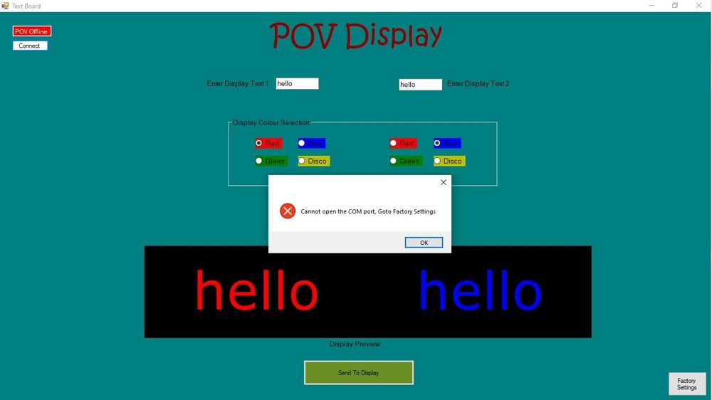
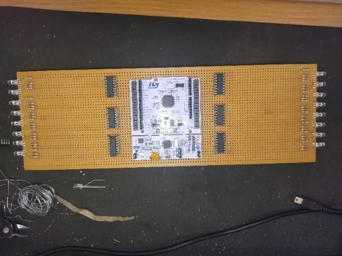
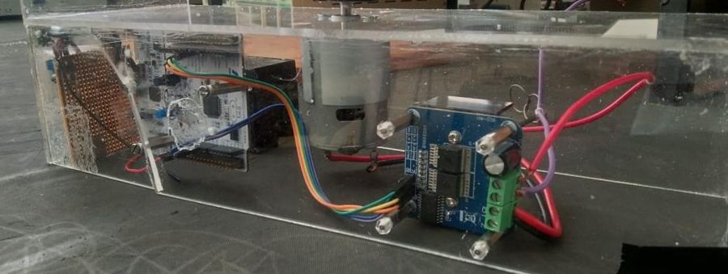

The idea
Shop signs are static: change the advert and you need a new sign. A persistence-of-vision display spins a column of LEDs fast enough that the eye sees a still image, and the image can change whenever you like. My goal was a display any shop could update from a laptop.

Building the hardware
I designed the circuits in KiCad and soldered them onto Veroboard. Two columns of RGB LEDs are driven by six shift registers, one per colour per column, so a single microcontroller can control dozens of LEDs. Everything on the rotor runs from a 9 V battery through a regulator, and a 3D-printed holder keeps it balanced.


Plans changed
The original design used a brushless motor with built-in position sensors, which would have kept the image locked in place. Halfway through, the driver chip I had ordered turned out to be incompatible with the motor. With the deadline close, I switched to a brushed DC motor and an H-bridge driven from a second STM32. It worked, but without position feedback the image drifts.
The software
Two pieces of code talk to each other. A Visual Basic app turns the message into a framed packet and sends it over Bluetooth. Mbed C++ firmware on the STM32 decodes it into LED patterns, using a shift-register driver class I wrote for the project.
If I built it again, I would start with motor position sensing. Synchronising the LEDs to the rotor angle is what turns a flickering message into a stable image.